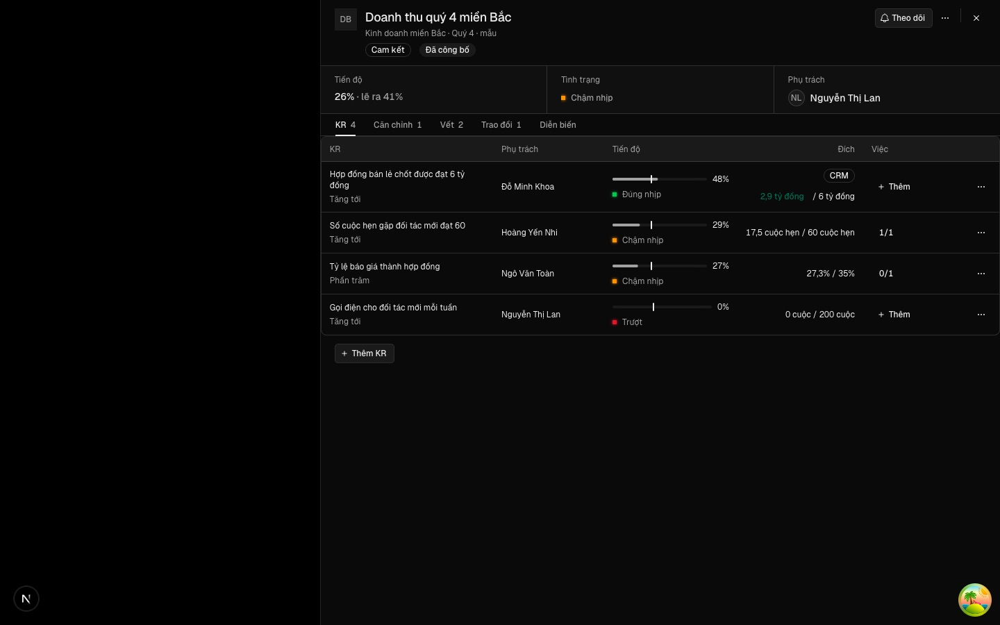
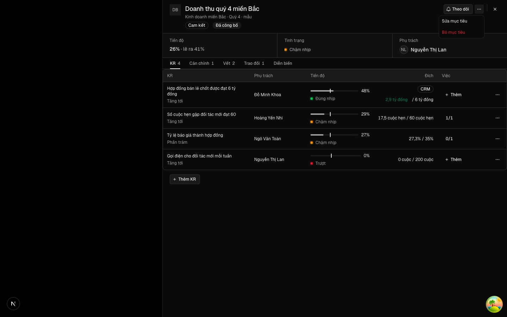
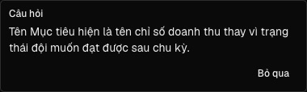
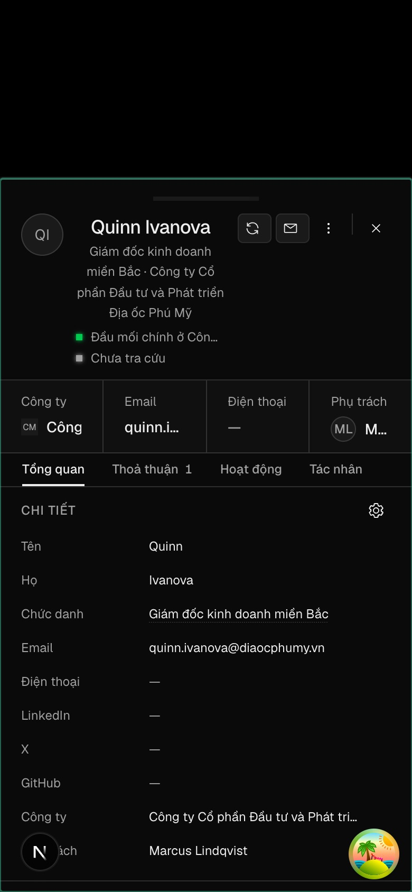

Lái thử thẻ góp ý của Trợ lý OKR
30/09/2026 · mã production (onehub 0553e0ce, PR #212) · phiên đo riêng có tác tử và model thật · trưởng phòng Kinh doanh miền Bắc · 1440 px và 390 px · 29 ảnh
Hạng mục đã chứng minh
| Hạng mục | Kết quả | Số đo / quan sát |
|---|---|---|
| Hộp rộng ra khi cột góp ý mở (cỡ assist) | Đạt | Hộp 384 → 800 px; form 352 → 364 px; cột 380 px; câu mới 358 px; không tràn ngang |
| Thẻ xếp dọc ba tầng, hàng nút ở chân, một nút chính | Đạt | 6 thẻ: viết lại và căn chỉnh có đúng 1 nút tô màu; câu hỏi 0 nút tô màu |
| Sửa rồi nhận đúng chữ đã sửa | Đạt | Đọc lại API: «Không thoả thuận nào của miền Bắc bị mất dấu trong quý 4»; toast có «Hoàn tác» |
| Esc trong ô sửa huỷ sửa, không đóng hộp | Đạt, kèm lỗi L1 | Hộp vẫn mở (1 hộp thoại); nhưng viền «ô được chỉ» kẹt lại |
| Thẻ chỉ tới ô của form | Đạt, kèm lỗi L1 | Rê/focus thẻ tên → ô Tên sáng viền; viền không tắt sau khi thoát sửa |
| Phím J/K/E trong cột | Đạt | J sang thẻ kế, K về thẻ đầu, E mở ô sửa |
| «Mở KR này» mở đúng hộp Sửa KR | Đạt | Hộp Mục tiêu đóng, hộp Sửa KR «Số cuộc hẹn gặp đối tác mới đạt 60» mở, cột chỉ thẻ của KR đó |
| «Mở KR này» khoá kèm lý do khi Mục tiêu còn sửa dở | Đạt | Nút khoá khi ô «Vì sao lúc này» có chữ chưa lưu |
| Căn chỉnh, Bác, Bỏ qua → thẻ gọn một dòng | Đạt | «Căn chỉnh — Đã nhận», «Tên KR — Đã bác», «Câu hỏi — Đã bỏ qua» |
| Điện thoại 390 px: cột xếp dưới form, thẻ trải hết bề ngang | Đạt, kèm điểm U7 | Hộp 358 px, cột 326 px, thẻ 326 px, không tràn ngang |
| Tab Vết ghi «theo đề xuất của Trợ lý OKR» | Đạt | Hai dòng: sửa tên và gắn căn chỉnh |
| Thông tin của Cá nhân dùng cùng thẻ ở dạng gọn | Đạt, kèm điểm U9 | «Nhận» tô màu, «Bác» mờ; nhận xong chức danh đổi, toast «Đã thêm vào hồ sơ» |
Lỗi
Viền «ô được chỉ» kẹt lại sau khi thoát sửa
Bấm E (hoặc Sửa) trên thẻ tên rồi Esc hay Huỷ: ô «Tên mục tiêu» vẫn sáng viền. Gõ tiếp vào ô «Vì sao lúc này» thì hai ô cùng sáng — người đọc không biết thẻ nào đang chỉ ô nào.
Gốc: Ô sửa bị gỡ khỏi trang khi đang giữ focus; Chrome không phát sự kiện blur cho phần tử bị gỡ, nên `onBlur` của thẻ không chạy và cờ «chỉ ô» không tắt.
Hướng sửa: Tắt «chỉ ô» khi kết thúc sửa (Huỷ, Esc, Nhận bản đã sửa) và trả focus về thẻ; thêm ca kiểm DOM «thoát sửa tắt chỉ ô».
Esc làm rơi focus bàn phím
Sau Esc trong ô sửa, focus không về lại thẻ hay nút «Sửa»; người dùng bàn phím phải Tab lại từ đầu hộp.
Gốc: Cùng gốc với L1: phần tử giữ focus bị gỡ.
Hướng sửa: Trả focus về thẻ khi thoát sửa (chung bản sửa L1).
Lời nhắc sai trong hộp Sửa KR
Hộp Sửa KR có chữ chưa lưu: thẻ câu hỏi hiện «Lưu thay đổi của Mục tiêu trước khi mở KR» dù màn này không có Mục tiêu nào để lưu và không có nút mở KR.
Gốc: Lý do khoá của thẻ câu hỏi không xét việc có nút «Mở KR này» hay không.
Hướng sửa: Chỉ đặt lý do khi thẻ có nút mở KR (sửa một dòng ở hàm chuyển thẻ).
Điểm UX/UI nên cải thiện
Viền «chỉ ô» trùng viền focus
Ô được chỉ dùng đúng viền xanh của focus. Lúc mở hộp, ô tên đã có viền focus sẵn, nên rê chuột lên thẻ không thấy gì đổi (ảnh 05 và 07 giống nhau). Bản thân thẻ đang rê cũng không có trạng thái hover.
Đề xuất: Dùng dấu khác cho «được chỉ» (nền nhấn nhạt hoặc vạch trái màu thương hiệu) và thêm hover cho thẻ; biến thể nằm trong packages/ui.
Form và cột cuộn chung một thanh
Cột có 6 thẻ bị cắt ở đáy hộp; cuộn để xem thẻ thì form trôi theo, tiêu đề và số đếm của cột cũng trôi mất.
Đề xuất: Ở ≥ 1024 px cho cột cuộn riêng (form đứng yên), giữ đầu cột dính trên.
Số đề xuất lặp hai lần và câu giải thích dài
Nút «6 đề xuất đang chờ» ở đầu form lặp dòng «6 đề xuất…» đầu cột; câu «Nhận là ghi ngay, kèm vết…» chiếm hai dòng mỗi lần mở.
Đề xuất: Khi cột đang mở, đổi nút thành trạng thái đã mở hoặc ẩn; rút câu giải thích thành chú thích một dòng hoặc tooltip.
Dòng đã quyết thiếu nội dung, nặng như thẻ chờ
«Câu hỏi — Đã bỏ qua», «Tên KR — Đã bác» không cho biết câu nào, KR nào; dòng đã quyết vẫn có viền như thẻ chờ.
Đề xuất: Thêm trích ngắn (câu mới hoặc tên KR, cắt một dòng); làm dòng đã quyết nhạt hơn, không viền; nhóm các dòng đã quyết xuống cuối cột.
Toast không đồng nhất
Nhận thẻ viết lại có «Hoàn tác»; nhận thẻ căn chỉnh chỉ có «Đã nhận».
Đề xuất: Thêm «Hoàn tác» cho căn chỉnh (gỡ liên kết vừa gắn) hoặc nói rõ trong toast cách gỡ.
Thứ tự dòng đã quyết lẫn lộn
Dòng «Tên Mục tiêu — Đã nhận» ở đầu, «Căn chỉnh — Đã nhận» ở cuối, xen giữa thẻ chờ.
Đề xuất: Đi cùng U4: thẻ chờ lên trên, dòng đã quyết xuống dưới theo thứ tự quyết.
Điện thoại: mở hộp tự cuộn tới cột, che ô tên
Ở 390 px hộp mở là đã cuộn qua ô «Tên mục tiêu» tới cột góp ý; người dùng mất ngữ cảnh đang sửa Mục tiêu nào.
Đề xuất: Chỉ tự cuộn tới cột khi người vừa bấm «Nhờ góp ý»; mở lại hộp có sẵn đề xuất thì giữ đầu form.
Câu hỏi không có lối đi tiếp
Trong hộp Sửa KR, câu hỏi «KR này đếm hành động…» chỉ có «Bỏ qua»; người phải tự tìm ô cần sửa.
Đề xuất: Thêm nút viền «Sửa tên KR» đưa focus vào ô tương ứng (dùng lại cơ chế «chỉ ô»).
Thẻ thông tin của Cá nhân lệch lưới và thiếu ngữ cảnh
Thẻ chen vào lưới hai cột làm ô «Email» cột phải tụt xuống, để khoảng trống; thẻ không nói đây là đề xuất của tác tử, không đặt «IT Director» cạnh chức danh mới, không nói độ tin; trên điện thoại thẻ bó trong cột giá trị (238 px).
Đề xuất: Đặt thẻ trải hết hàng dưới trường; thêm nhãn «Tác tử đề xuất · độ tin vừa»; dùng dạng viết lại (cũ gạch → mới) khi trường đã có giá trị.
Bố cục nhảy khi cột mở
Bấm «Nhờ góp ý» làm hộp nở từ 384 lên 800 px và dời form sang trái cùng lúc.
Đề xuất: Chuyển tiếp mềm (transform/opacity) hoặc mở sẵn cỡ assist khi Trợ lý đã bật cho đơn vị.
Đề xuất lượt kế
- Lượt sửa nhanh (T2): L1 + L2 (thoát sửa tắt chỉ ô, trả focus), L3 (Ngoài-4), U1 (dấu chỉ ô riêng và hover thẻ), U4 + U6 (dòng đã quyết có trích, nhạt, xuống cuối), U7 (không tự cuộn khi mở lại hộp).
- Lượt bố cục (T2): U2 (cột cuộn riêng), U3 (bỏ lặp số đếm), U10 (chuyển tiếp khi mở cột).
- Lượt thẻ thông tin Cá nhân (T2): U9 — trải hàng, nhãn tác tử và độ tin, dạng cũ → mới.
- Hợp đồng đã hẹn: Ngoài-10 — ma trận viết trước cho phép đo «bấm trong cột không đóng hộp»; U5, U8 gộp vào lượt từ vựng tác tử.
Từng bước, ảnh đầy đủ





